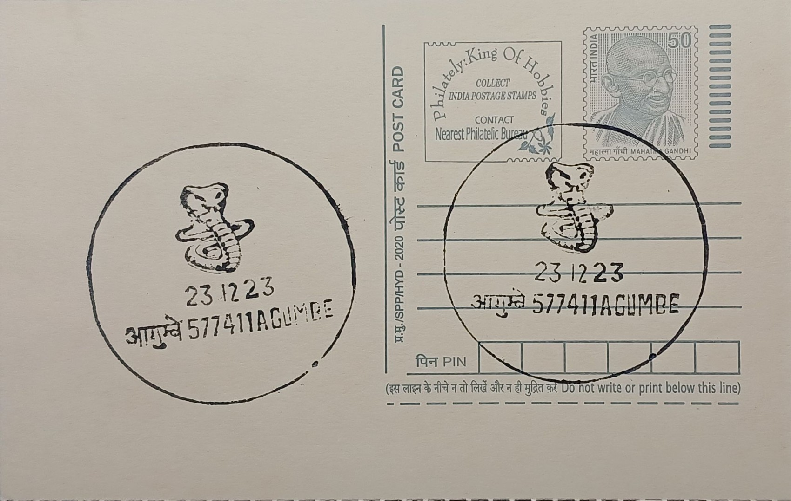

Kalinga - King Cobra
ಕಾಳಿಂಗ - ರಾಜ ನಾಗರಹಾವು


The king cobra carries the scientific name Ophiophagus hannah, a genus title coined by the zoologist Albert Günther in 1864, replacing an earlier designation that clashed with a butterfly genus already in use. Ophiophagus derives from Greek roots meaning "snake-eater," a direct reference to its near-exclusive diet of other snakes, including pythons, rat snakes and even smaller cobras, a trait that sets it apart from almost all other elapids. In Agumbe, where the species is closely studied, local Kannada-speaking communities traditionally refer to it with reverent and cautious names tied to naga worship rather than everyday snake terminology, reflecting a long-standing regional distinction between the king cobra and the common cobra in both folklore and practical caution.
As the world's longest venomous snake, the king cobra typically measures between 3.18 and 4 metres, with verified records of individuals reaching up to 5.85 metres, a scale that places it in a category apart from any other venomous species on earth. It is classified under the family Elapidae and is presently listed as Vulnerable on the IUCN Red List, its populations undermined by habitat fragmentation, persecution and declining prey-snake numbers across much of its South and Southeast Asian range. Within India, Karnataka's Western Ghats, and Shivamogga district in particular, represent one of the few landscapes where the species still maintains a genetically viable, breeding wild population, making the region disproportionately significant to the snake's long-term survival on the subcontinent.
The species displays a reproductive behaviour unmatched among snakes: the female king cobra is the only snake known to construct an above-ground nest for her eggs, built almost entirely from dry leaf litter gathered and arranged using coils of her own body. In the Western Ghats, nest construction typically begins in the dry month of April, ahead of the monsoon, producing mounds that can reach roughly 55 centimetres in height and 140 centimetres across at the base. A single clutch generally contains between 7 and 43 eggs, with incubation lasting 66 to 105 days, during which the female remains close by to guard the nest, a level of parental investment otherwise unrecorded in the group.
Agumbe's standing in king cobra research was established chiefly through the Agumbe Rainforest Research Station, founded in 2005 by herpetologist Romulus Whitaker, who had first encountered a king cobra at the same site in 1971. The station ran the world's first radio-telemetry study of wild king cobras, also the first such tracking project on any snake species in India, generating much of the data later used to confirm and describe the species' nesting behaviour in detail. Over roughly a decade of operation the station responded to more than 2,000 wildlife rescue calls, of which close to 500 involved king cobras, work that combined active conservation with public education in a region where encounters between the snake and local communities remain frequent.
The research station's continuing programmes, built around the king cobra as a flagship species, have extended into training field biologists and documenting the wider herpetofauna of the Agumbe rainforest, a landscape recognised as one of the wettest in India and correspondingly rich in reptile and amphibian diversity. Conservation groups and herpetologists associated with the site, including figures who began as Whitaker's trainees, have since taken on rescue and awareness work across Shivamogga district, maintaining a direct link between the original research initiative and present-day fieldwork. The post office at Agumbe, through its pictorial cancellation, ties this scientific legacy to the locality itself, marking the king cobra's association with the town in the same register as the philatelic record of India's other protected and studied wildlife.
| Date of Introduction | December 7, 2018 |
|---|---|
| Address | Sub Postmaster, |
| Agumbe SO, | |
| Shivamogga (dt.), Karnataka - 577411. |